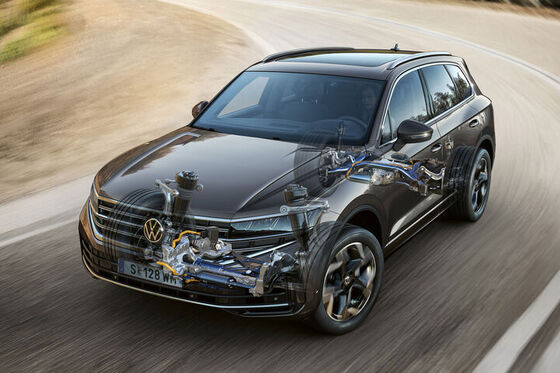
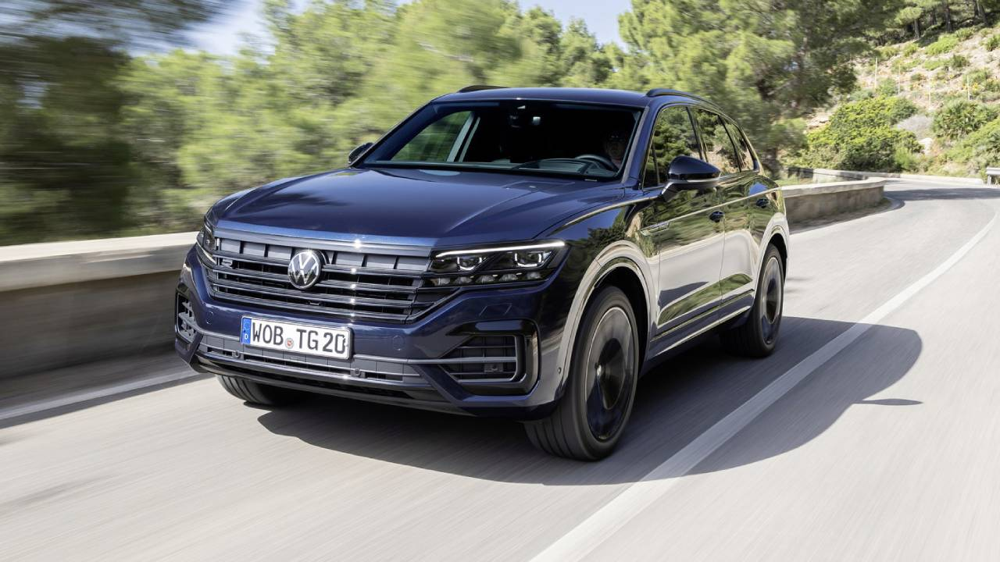

LKSWAGEN
LKSWAGEN
Touareg
Yeni Touareg. İnce düşüncelerin eseri.
Üst sınıf bir SUV’den neler beklenir? Dikkat çekici bir tasarım? Titizlikle seçilmiş yüksek kaliteli malzemeler..? Güçlü bir motor..? Bugünlerde pek çok SUV’nin hedefleri aynı. Peki ya daha fazlasını isteyenler..? Touareg, baştan aşağı bir değişimle yeniden karşınızda! Daha önceki jenerasyonlarında olduğu gibi durdurulamaz bir güç ile premium donanım özelliklerini, bu kez geleceğe ışık tutan teknolojilerle buluşturuyor.
Tasarım

İhtiyacınız olduğunda, ışık sizinle.
IQ.LIGHT - HD Matrix Farlar sadece geceleri daha iyi bir görüş sunmakla kalmaz, aynı zamanda size sürüş esnasında destek verir. IQ.LIGHT - HD Matrix Farlar, çeşitli sürüş koşullarına uyum sağlamak ve zengin ışık dağıtım seçeneklerine sahip olmak için her bir ön farda bağımsız olarak kumanda edilen 19 binden fazla LED segment sunar. Yeni Touareg’inizin uzun farları açıkken trafik işaretlerini daha parlak görürsünüz, böylece otoyollarda çalışma olan kapatılmış şeritleri görmek ve ona göre aracınızı akan şeride sokmak kolaylaşır. Dinamik Uzun Far Asistanı “Dynamic Light Assist” özelliğine sahip IQ.LIGHT - HD Matrix Farlar, karşıdan gelen ve önünüzde seyir eden araç sürücülerini rahatsız etmeden daha hassas bir şekilde yolu aydınlatır. Ayrıca, Yeni Touareg’inizi çalıştırdığınızda ve park ettiğinizde ön tarafa sizin için özel ışık animasyonu yansıtır. (E) (R)
KONFOR

Eşsiz bir kullanıcı deneyimi.
Yeni Touareg'in dijital iç mekanı sınırsız konfor ve eğlenceyi bir arada sunar. Tüm bilgilendirmeleri sürücünün görüş alanına yansıtan ve yolculuğunuzu daha keyifli hale getiren 12.3” Dijital Gösterge Paneli "Digital Cockpit Pro" ve 15” "Discover Pro Max" Navigasyon Sistemini bir arada sunar. Yolculuğunuzu daha kolay hale getiren yenilik: Dijital Kokpit "Innovision Cockpit". (E) (R) Dokunma, jest veya ses kontrolü ile yönetilebilir. İşlevleri grafik ve animasyonlar hâlinde görüntüler. Ana ekrandaki içerik özelleştirilebilir. Favoriler ve kısayollar için düğmeler özgürce programlanabilir. Seçilen ekranlar büyütülebilir.
Teknoloji

En zorlu arazilerde bile üstün performans.
Off-Road Paketi ile Yeni Touareg'inizin arazi kabiliyetlerini iyileştirin. 7 adet standart sürüş modunun yanında çakıl ve kumda da motor ve vites ayarlarını koşullara uygun hâle getirir ve üstün bir kullanıcı deneyimi sunar. (O) Radyatör, akü, gövde altı ve yakıt deposu için daha yüksek koruma. 90 litreye kadar yakıt alabilen depo daha fazla menzil sunar. Kum ve çakıl zeminde seyir için özel sürüş modları.
Güvenlik

Mesafenizi korur ve hız sınırlarınıza uyar.
Adaptif Hız Sabitleyici “ACC”, Yeni Touareg'in gelişmiş radar teknolojisiyle donatılmış bir özelliğidir. Bu sistem, aracınızın önündeki yolu sürekli olarak tarar ve sürücü tarafından belirlenen bir hızı korumasını sağlar. 1 Adaptif Hız Sabitleyici "ACC", dur-kalk trafikte de son derece kullanışlıdır. Bu sistem, önde duran araca yaklaştığınızda hızınızı otomatik olarak düşürür ve gerektiğinde tamamen durmanıza yardımcı olur. Ardından, trafik hareket ettiğinde tekrar hızlanmanıza olanak tanır. 2 Adaptif Hız Sabitleyici “ACC”, trafik sıkışıklığı veya yavaş hareket eden trafikte daha fazla konfor ve güvenlik sağlar, seyahatlerin daha akıcı ve stressiz olmasına katkıda bulunur. (E) (R) 1 Maksimum 210 km/s hıza kadar. 2 Hız limitleri dahilinde.
Volkswagen Hakkında Modeller Ve Fiyatlar İletişim Sosyal Medya
İkinci El Araçlar Tüm Modeller Yetkili Satıcı Facebook
Ticari Araçlar SUV Modeller Online Servis Instagram
Satış Sonrası Hizmetler Araç Fiyatları İletişim Ve Destek Twitter
Kampanyalar Aksesuarlar Bilgi Formu Youtube
|